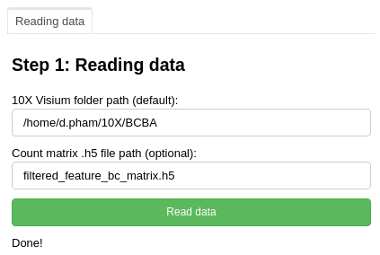
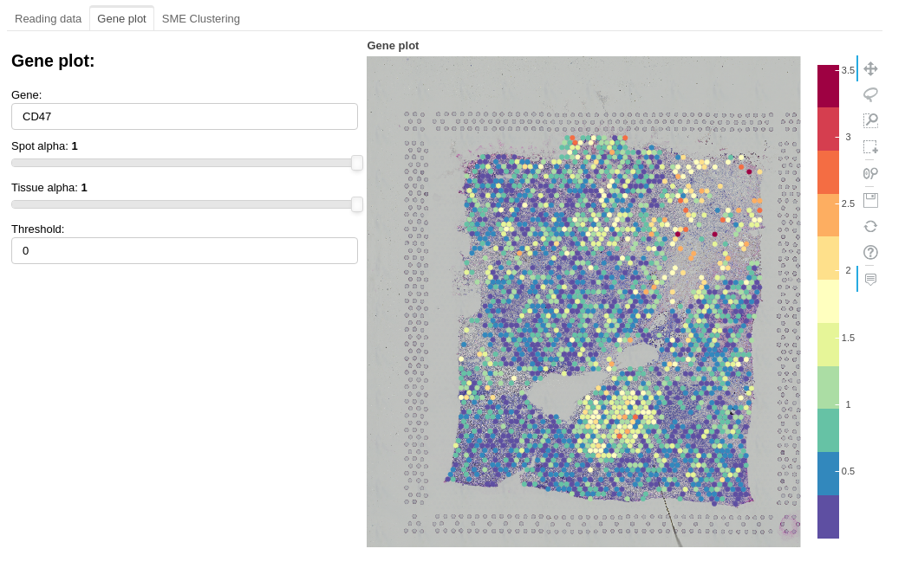
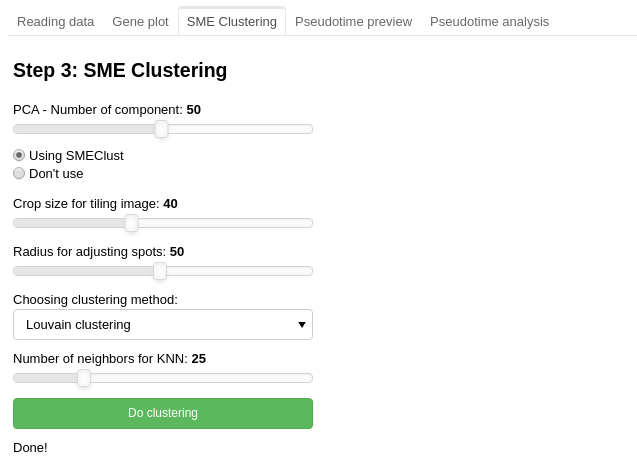
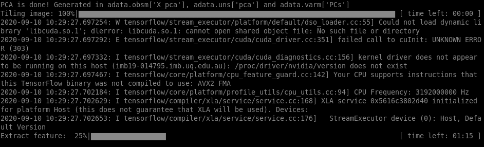
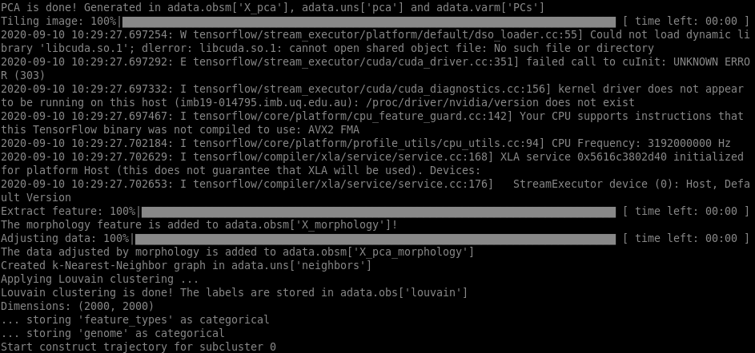
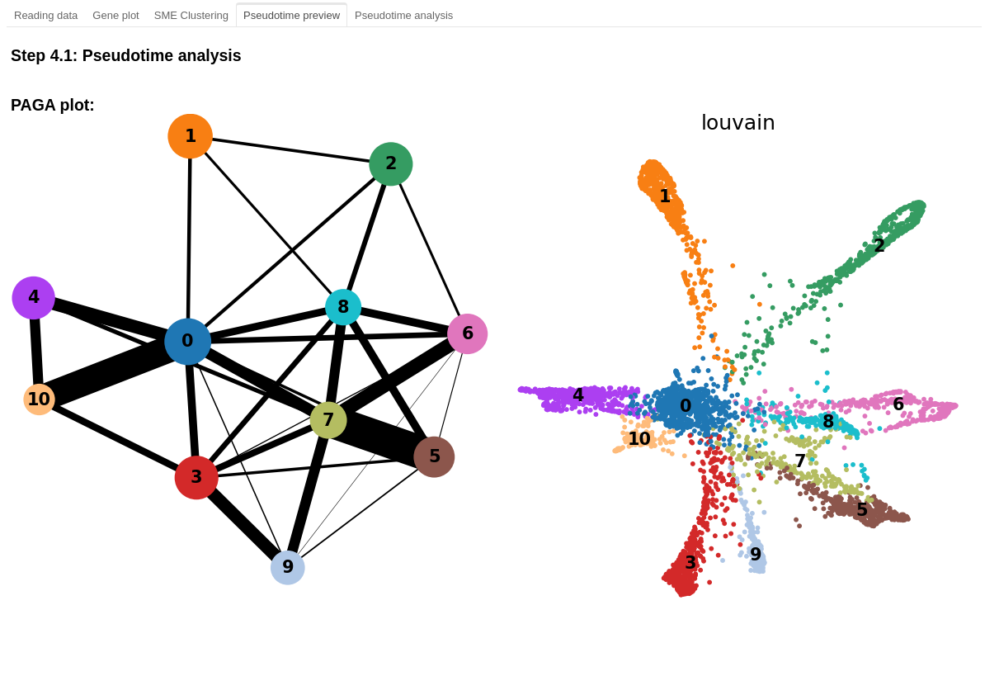
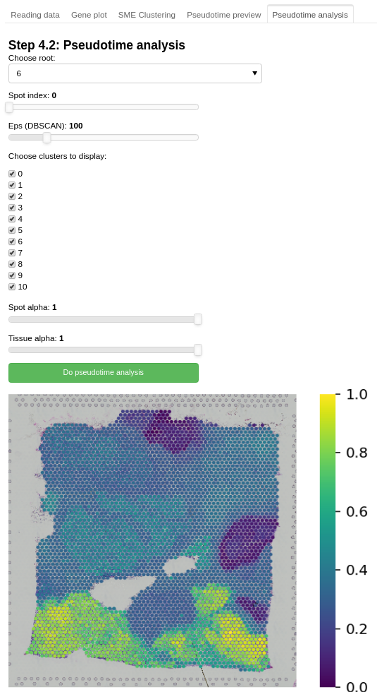
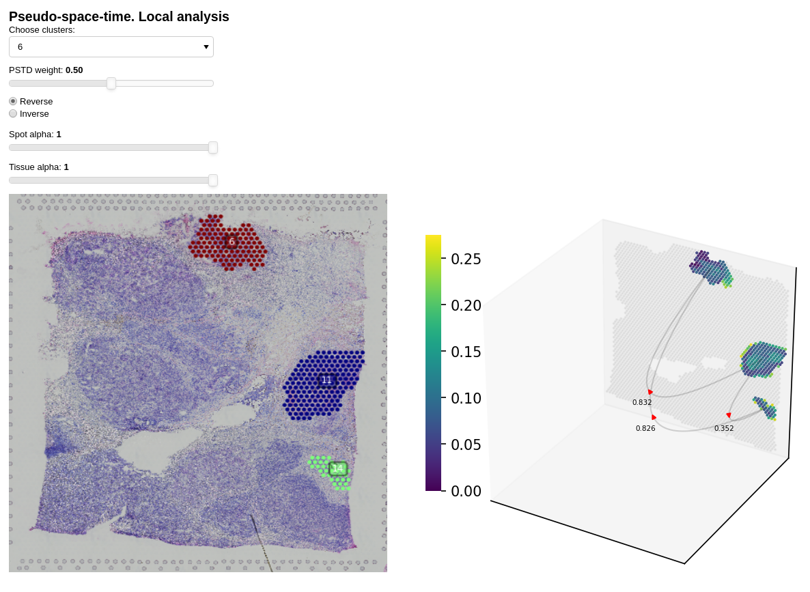
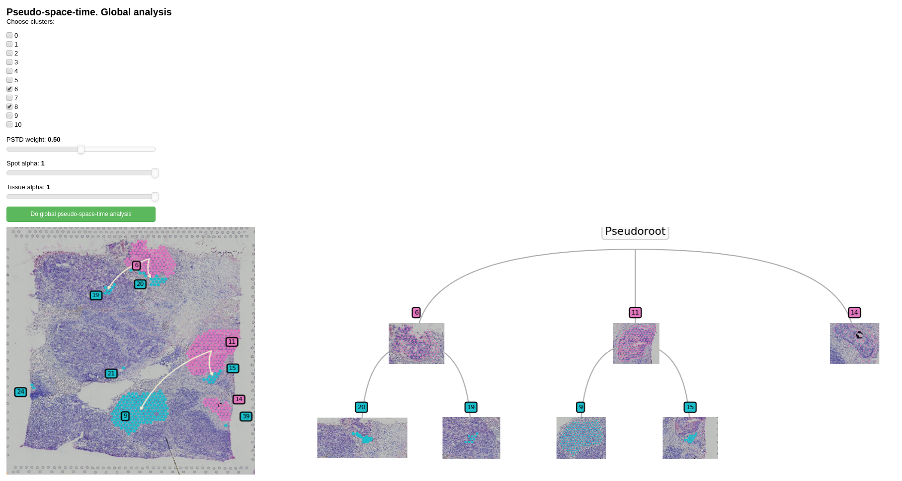

stLearn interactive web app tutorial¶
Installation:¶
This is the installation steps for stlearn interactive web app: Installation
Step 1: Read data¶
Set the path in the box as your link to 10X Visium dataset (we will try to expand to other platforms later).

Gene plot¶
After run the preprocessing, the gene plot will be displayed. - Gene: you can input any gene name that exists in the dataset. - Spot alpha: Opacity for the spots. - Tissue alpha: Opacity for the tissue image. - Threshold: the gene expression threshold to be displayed. The spots with larger gene expression than the threshold will be shown.

Step 3: Clustering¶
We combine several small steps here. First, we provided: - Number of components to run PCA - You can specify to use stSME or not - Crop size image - Radius to adjust the image for smoothing step - Choosing the method of clustering - Number of the neighbour for KNN

This step will take quite long (if you choose stSME method). You can track the progress in the command line screen.


It also generates the initial result of Pseudotime analysis (PAGA method).

Step 4: Pseudotimespace analysis¶
We provided 3 components of the Pseudotimespace analysis in this step.
The first one is the mapping of the pseudotimespace value in the Spatial Transcriptomics tissue.
Parameters: - Specify the root cluster - Spot index as the root spot - Eps parameter for the localization process - You can choose which clusters should be displayed - Spot alpha and tissue alpha are the opacity options.

The second component is the local analysis for PTS.
Parameters: - Choose which cluster to run the analysis. This cluster has to be more than one sub-clusters (spatially distributed). - You can choose the weight to balance between gene expression and spatial relationship. - Inverse or reverse the pseudotimespace value. - Spot alpha and tissue alpha are the opacity option.

The final component is the global analysis for PTS.
Parameters: - Choose a set of clusters to run the global analysis. With this current algorithm, we recommend choosing a pair of clusters. - You can choose the weight to balance between gene expression and spatial relationship. - Spot alpha and tissue alpha are the opacity option.

[ ]: